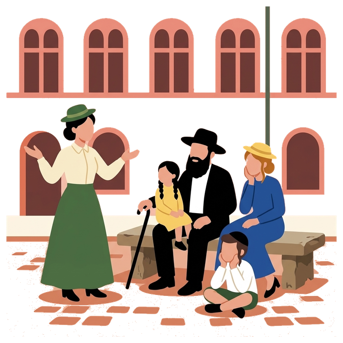
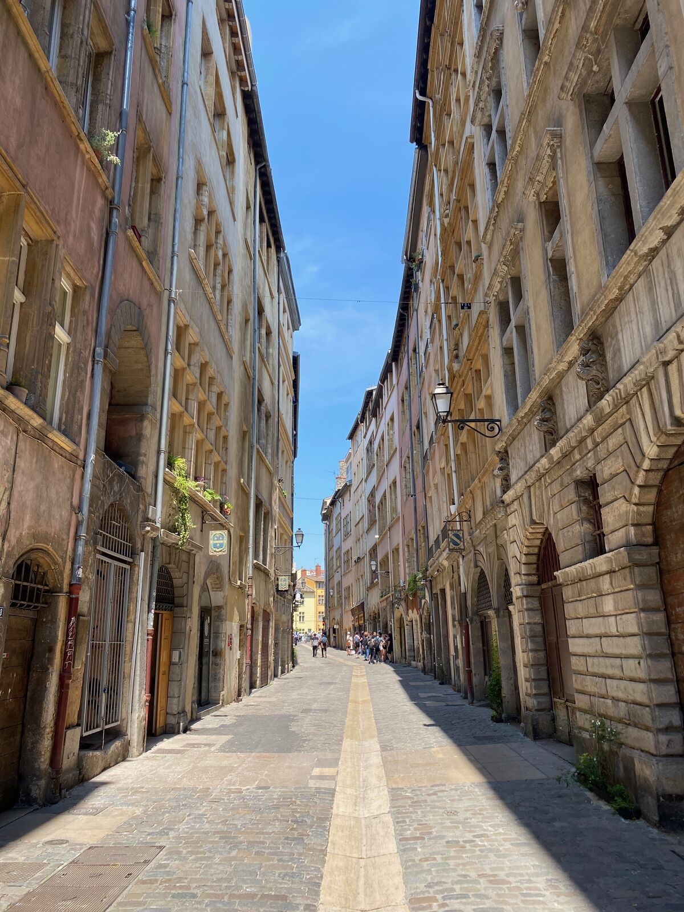
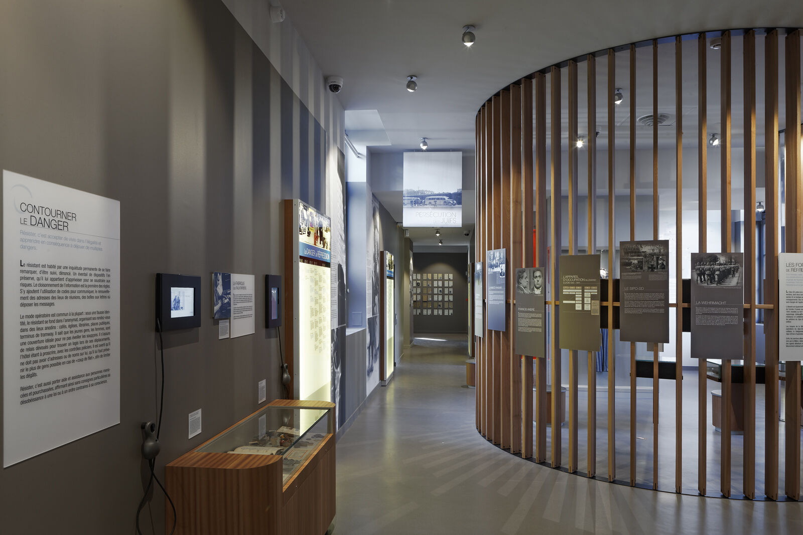

Home / Jewish Lyon guide / Jewish history of Lyon
Jewish history of Lyon
from the Middle Ages to today
Jews lived in Lyon in the Middle Ages, disappeared for three centuries, came back in the 18th century, and rebuilt a large community in the 20th. In the war, Lyon was a refuge, a centre of the Resistance and the seat of Klaus Barbie's Gestapo. This page follows that story and shows where to see it.
- Middle Ages to 2026
- Medieval quarter to Barbie trial
- Places you can visit
- Checked 7 October 2026

The Middle Ages, and the end in the 1400s
Jews lived in Lyon by the ninth century. Bishop Agobard tried to force conversions around 820. In 1250 Archbishop Philip of Savoy expelled the community, then living on the present rue Ferrachat. A new community formed in the second half of the 14th century. It paid municipal taxes, and the city named officials to deal with it.
This community lived on rue Juiverie, at the foot of the Fourvière hill. The street kept the name. In 1394 King Charles VI expelled the Jews from the kingdom of France, and the city of Lyon dates the end of its own community to that year. The Encyclopaedia Judaica notes that Lyon was not yet part of the kingdom and gives about 1420, when most families moved to nearby Trévoux.
Sources disagree on the exact year. They agree on the outcome: for about three centuries, no Jewish community is recorded in Lyon.
The return, 1700s and 1800s
Jews came back slowly. In the 1600s a community formed again from families of Avignon, the Comtat Venaissin, Alsace and Bordeaux. In 1760 a Jew settled in Lyon, the first in more than three centuries according to French historians. In 1775 the community asked permission to open a cemetery.
The decree of 28 September 1791 let Alsatian Ashkenazi Jews settle freely, and the community grew. By 1840-1841 it counted 760 members.
The great sign of that growth is the Grande Synagogue on quai Tilsitt. Abraham Hirsch designed it. The foundation stone was laid in 1863 and the building was inaugurated on 23 June 1864. It follows the consistorial rite, the structure that organised French Jewish worship in the 19th century.
The twentieth century: two communities, then one
Before the war Lyon was a modest centre of French Judaism. According to a local academic summary, about 7,000 Jews lived in the agglomeration, 4,000 of them in Lyon itself. The Ashkenazim came mostly from Alsace. The Sephardim came from Turkey and Morocco. A community of Moroccan Jewish workers also formed in Saint-Fons between the wars. Arrivals from Eastern Europe in Lyon are not documented in the sources we checked.
After the war the community changed scale. Jews from North Africa arrived in the 1950s and 1960s, many of them settling in Villeurbanne. The community grew from about 7,000 in 1939 to more than 25,000 by 1987. This is why Lyon today has both a consistorial Ashkenazi tradition and a large Sephardi one, with Neveh Chalom, the large Sephardi synagogue, on rue Duguesclin.




Lyon in the war: refuge, Resistance, Gestapo
After the armistice of 1940 Lyon sat in the unoccupied zone and became a refuge for Jews. Tens of thousands of Jews passed through or settled in the city in those years; the sources disagree on the figure, so we do not quote one. Lyon was also a centre of the Resistance.
In November 1942 the Germans occupied the southern zone, and Klaus Barbie, aged 29, took charge of the Gestapo in Lyon. Three places tell what followed.
- The CHRD. In March 1943 the Gestapo requisitioned the former military health school at 14 avenue Berthelot and used it to interrogate resisters and Jews. Since 1992 it has housed the Centre d'histoire de la résistance et de la déportation. Read about the CHRD.
- Montluc. The Germans took over the prison from February 1943 to August 1944. Nearly 10,000 people were interned there. A national memorial opened in September 2010. Read about Montluc.
- Rue Sainte-Catherine. On 9 February 1943 the Gestapo raided the UGIF office at number 12 and arrested 86 people. Eighty were deported.
Barbie also arrested Jean Moulin, the representative of General de Gaulle to the Resistance, and according to his biography tortured him to death.
Key dates, one by one
- 1
820
Bishop Agobard tries to force conversions among the Jews of Lyon.
- 2
1250
Archbishop Philip of Savoy expels the Jews of Lyon.
- 3
1394 to about 1420
The medieval community ends. Sources give 1394 or about 1420. Most families move to Trévoux.
- 4
1760
A Jew settles in Lyon again, for the first time in about three centuries.
- 5
23 June 1864
The Grande Synagogue is inaugurated on quai Tilsitt.
- 6
9 February 1943
The Gestapo raids the UGIF office, 12 rue Sainte-Catherine. 86 arrested, 80 deported.
- 7
6 April 1944
The children of the Maison d'Izieu are arrested, on Barbie's orders.
- 8
February 1983
Barbie is arrested in Bolivia and delivered to France.
- 9
11 May to 4 July 1987
The Barbie trial in Lyon ends with a life sentence.
Izieu, and the trial
On 6 April 1944, in the village of Izieu, in the Ain, the Gestapo of Lyon arrested 44 Jewish children and 7 of their carers in the home that sheltered them. The group was taken to Montluc, then to Drancy the next day. Almost all were murdered at Auschwitz-Birkenau. The children's story is told at the Maison d'Izieu, which is one hour from Lyon by road.
Barbie was arrested in La Paz in February 1983 and delivered to France a few days later. His trial opened in Lyon on 11 May 1987. The murders of the Izieu children were central to the case. On 4 July 1987 he was convicted of crimes against humanity and sentenced to life imprisonment. Among the witnesses were survivors of the raid on rue Sainte-Catherine.
Many French people also risked their lives to save Jews. Yad Vashem has recognised thousands of Righteous Among the Nations in France. We do not publish a Lyon figure, because we have not found one we can source.
The community today
We do not quote a current headcount. No official census of Jews exists in France, and the figures we found run from 20,000 to 40,000 depending on the source and the year.
Jewish life in Lyon is organised in several layers.
- The Consistoire. The Consistoire de Lyon runs the Grande Synagogue, and the Consistoire Israélite Sépharade de Lyon runs Neveh Chalom.
- The Beth Din de Lyon. Kashrut is supervised by the Beth Din of the regional Consistoire, which certifies 36 places to eat and shop in Lyon, Villeurbanne and Écully. See kosher restaurants in Lyon.
- Villeurbanne. Most of the neighbourhood minyanim are in Villeurbanne, where Chabad also runs a synagogue, a yeshiva and a school.
- Chabad. Four Chabad houses, in the city centre, the 6th arrondissement, Villeurbanne and on the campus. See Chabad in Lyon.
Our synagogue page lists the prayer times. The Jewish cemetery of La Mouche, in Gerland, is the one active Jewish cemetery in the city.
Where to see it
- Rue Juiverie: the medieval street. Nothing Jewish and medieval is visible. The name is the trace.
- The Grande Synagogue: closed to visitors outside the Heritage Days. Our Jewish Lyon tour goes inside, subject to the day's opening hours and security.
- The CHRD and Montluc: the war in Lyon. We visit them on separate days: see the CHRD visit and the Montluc and Neveh Shalom visit.
- The Maison d'Izieu: the day trip, one hour from Lyon. See the Izieu day.
- Kosher in Lyon and the Jewish cemetery: the living community.
If you have only a few hours, take the Jewish Lyon tour. It runs 2 hours 30 minutes, on foot, with a Jewish guide, strictly kosher and never on Shabbat.
Questions we get
When did Jews first live in Lyon?
By the ninth century. Bishop Agobard tried to force conversions around 820, and the community was expelled in 1250. A new community lived on rue Juiverie in the 14th century.
When were Jews expelled from Lyon in the Middle Ages?
Sources differ. The city of Lyon dates the expulsion to 1394, when Charles VI expelled the Jews from the kingdom of France. The Encyclopaedia Judaica says Lyon was outside the kingdom at that date and gives about 1420.
What was Lyon's role in the war?
Lyon was a centre of the Resistance and a refuge for Jews, and from November 1942 it was the seat of Klaus Barbie's Gestapo. The CHRD, Montluc and rue Sainte-Catherine are the main sites.
What happened to the children of Izieu?
On 6 April 1944 the Gestapo of Lyon arrested 44 children and 7 carers at the home in Izieu. They were taken to Montluc, then to Drancy, and deported. The Maison d'Izieu is now a memorial and museum.
When was Klaus Barbie tried?
His trial opened in Lyon on 11 May 1987. On 4 July 1987 he was sentenced to life imprisonment for crimes against humanity.
How large is the Jewish community of Lyon today?
No official figure exists and we do not quote one. Jewish life is spread across the Consistoire, the Sephardi community, Villeurbanne and four Chabad houses.
Keep reading
Sources: fr.wikipedia.org (Histoire des Juifs à Lyon); Encyclopaedia Judaica (Lyons), via jewishvirtuallibrary.org; lyon.fr; Mémorial de la Shoah; memorial-montluc.fr; en.wikipedia.org (Klaus Barbie); jewishvirtuallibrary.org (The Children of Izieu). Compiled by Mishpacha Tours from these sources. Checked 7 October 2026.